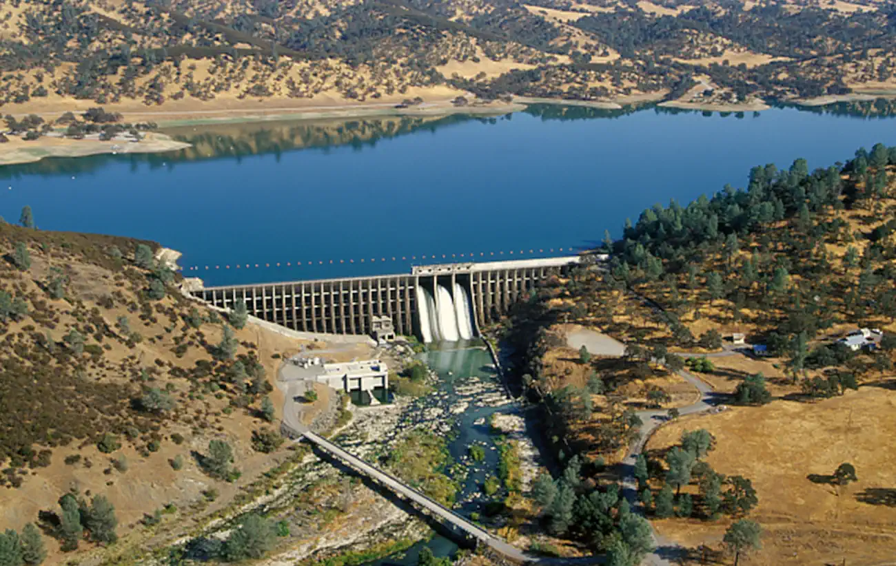
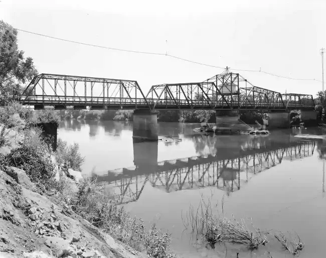
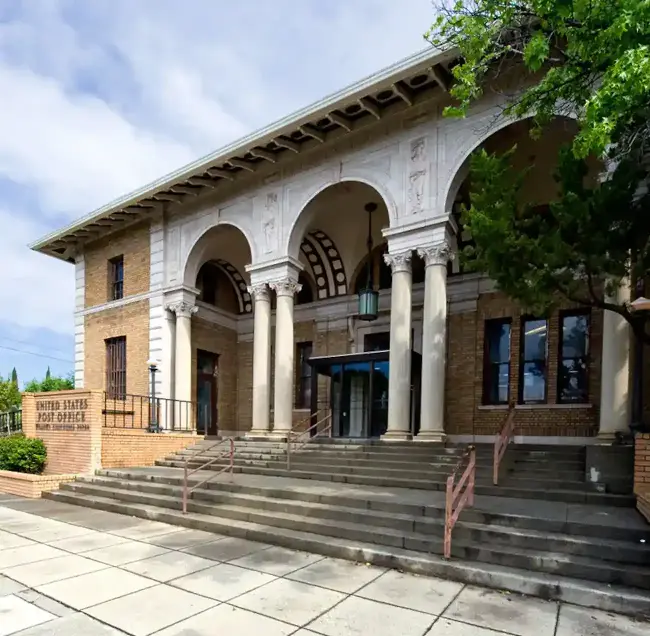

The first post office at Glenn opened in 1903. A. K. Barham owned and operated the Glenn Store
and on November 14, 1913, was appointed postmaster. At that time, the post office was located in
the store. The town had a church, school, several homes and a saloon. Barham's father was a
foreman on one of the wheat ranches of Dr. Hugh J. Glenn in Glenn County. (wikipedia)
Current Events
Upcoming Holidays

An image of Stony Gorge Dam in Glenn County.Bald Eagles are prevalent in the late winter - spring.

The Gianella Bridge was a swing bridge between Glenn County and Butte County.

Historic Willows Post Office in the seat of Glenn County.
Glenn County is an extremely important stopping point for migratory birds, like these
Snow Geese.
Black Butte Lake was formed when the Black Butte Dam was completed in 1963.